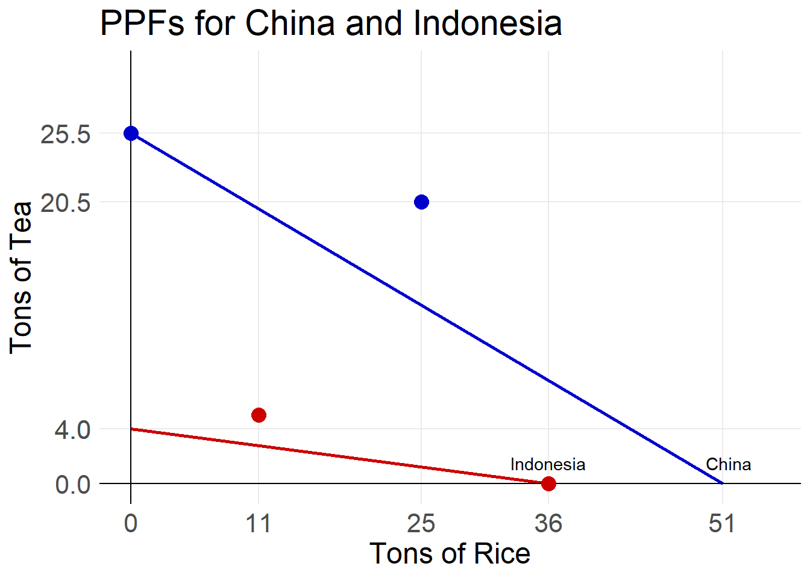
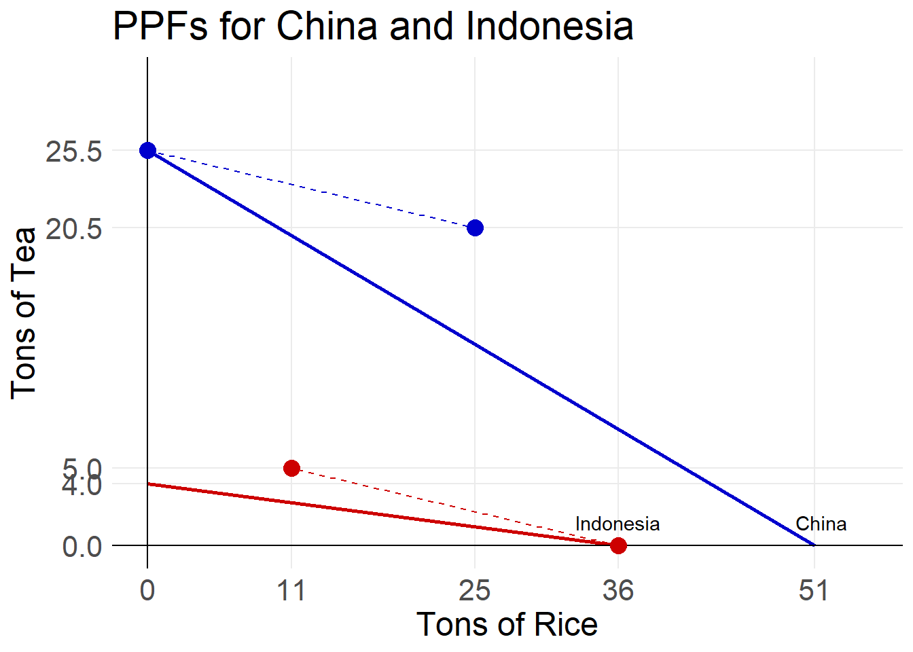

Chapter 3 Gains from Trade and Demand
3.1 Gains from Trade
Countries that trade with other countries are called open economies while countries that choose not to trade with others are closed economies. In Week 7 we will discuss international trade in detail, discussing tariffs, quotas, and other protectionist policies. Some of the arguments for protectionism (policies to reduce imports) are that it allows domestic firms to increase sales through weakened outside competition. However, this also leads to increased prices. In today’s reading we will discuss the theory of going from a closed economy to an open economy and how it affects the global production possibility frontier.
3.1.1 Production Advantages
Let us look at the countries of China and Indonesia. Both countries are large producers of rice and tea. Currently China is the 2nd largest producer of rice and the largest producer of tea. Indonesia is the world’s 4th largest producer of rice and 7th largest producer of tea. Let us assume that their production possibilities are as given below:
| Rice in tons | Tea in tons |
|---|---|
| 0 | 25.5 |
| 51 | 0 |
| Rice in tons | Tea in Tons |
|---|---|
| 0 | 4 |
| 36 | 0 |
Plotting each countries production possibility frontiers looks like this.

We can quickly see that if both countries were to only produce rice, that China would produce more than Indonesia. This means that China has an absolute advantage in rice production. Similarly, China has the absolute advantage in tea production, because if both countries put all of their resources into tea, China would produce more?
So why would China be interested in trading with Indonesia, if they are better at producing both goods? Because of opportunity cost.
A country, person, or business has the comparative advantage in producing a good or service if they are able to produce it at the lowest opportunity cost.
What is the opportunity cost of growing rice?
In order for China to grow rice, it must not grow any tea. Their opportunity cost is \(\frac{25.5}{51} = 0.5\). China must give up 0.5 tons of tea in order to grow 1 ton of rice. Similarly, Indonesia’s opportunity cost is \(\frac{4}{39} \approx 0.11\). Because Indonesia’s opportunity cost of growing rice is less than China’s, Indonesia has the comparative advantage.
What is the opportunity cost of growing tea?
In order for China to grow tea, they must give up growing rice. China’s opportunity cost of growing tea is \(\frac{51}{25.5} = 2\). Indonesia’s opportunity cost is \(\frac{36}{4} = 9\). So, China has the lowest opportunity cost and the comparative advantage in tea production.
3.1.2 Specialization
Most countries of the world only export a select group of goods and services. They choose the goods and services for which they have the comparative advantage. The act of only producing those goods and services for which a country or firm has the comparative advantage is called specialization. In our scenario China should specialize in tea. This means China makes 25.5 tons of tea and 0 tons of rice. Indonesia should specialize in rice making 0 tons of tea and 36 tons of rice.
Graphically, we can see their production points. China produces at point C1 while Indonesia produces at I1.

3.1.3 Trade
Once countries have specialized, they trade with countries that have other specialties.
Because China must give up 0.5 a ton of tea to grow rice, they are willing to purchase rice from others if the price is less than 0.5 tons of tea. If the price is higher then they will just produce it themselves.
Similarly, Indonesia’s opportunity cost of growing rice is 0.11. If they can sell for a price greater than this the will.
This disparity in opportunity costs is what makes trade advantageous for both countries even though China has the absolute advantage in production. Suppose that China agrees to purchase 25 tons of rice from Indonesia at a price of 0.2 tons of tea per ton of rice. This means that China will give Indonesia 5 tons of tea.
China will end with 25.5 - 5 = 20.5 tons of tea and 0 + 25 = 25 tons of rice.
Indonesia will end with 0 + 5 = 5 tons of tea and 36 - 25 = 11 tons of rice.
Plotting these points shows us more clearly how both countries end up better off from trade. The amounts of rice and tea for China after trade is seen at point C2, and for Indonesia at point I2.

By connecting the points before and after trade for each country, we get their trade line. The trade line shows us the different combinations that the countries could land at after trading different quantities.

3.1.4 Unattainable Individually but Efficient Globally
Through trade, China and Indonesia are able to reach points beyond their PPF’s. Alone these points would be unattainable. Through trade, the combined production of all countries allows us to reach efficient production on the economic (or global) PPF.
3.2 Economic Growth
When a country is able to reach points that were once unattainable without trade, that country has experienced economic growth. Economic growth can occur through technological change or capital accumulation. Economic growth does not remove the problem of scarcity, but it does allow us to make more efficient use of our resources. Examples of technological change include the advent of AI, GPS tracking in tractors, and the assembly line. Capital accumulation is the growth of capital resources including human skills and knowledge. Because Isaac Newton helped build the rules of Calculus, modern mathematicians do not have to re-discover calculus. Rather they can build on it and make new discoveries.
To help you visualize economic growth, there are two interactive graphs below.
This graph shows how the PPF changes if a technological change only affects one good or service.
3.3 Markets
What is a market? In economics we define a market as any arrangement that enables buyers and sellers to get information and do business with one another. We use this broad definition because it encompasses the many different types of markets in our society.
Some markets have many buyers and sellers in person doing business, like a farmers market. Other markets have many buyers physically present, but there are not individual sellers, like a grocery store. And others are completely online with buyers and sellers never having to interact with one another, like Amazon.
Markets vary in the nature of competition that buyers and sellers face. Some markets are dominated by only a few firms, while others have so many firms that it is hard for any one seller to stand out. A market where there are so many buyers and sellers so that no individual buyer or seller can influence the price is a competitive market. We will start our analysis of markets by analyzing competitive markets. Later in the semester, we will discuss other types of markets.
3.4 Demand
The definition of market was a place for buyers and sellers to go to obtain information and do business. One of the key items of information for sellers to give to potential buyers is a price. What is price? You may think that it is the amount of money you must pay for something. We call this the money price. However, price does not have to be money. you could trade a good or service in exchange for something, or barter. It is best to thing of price as what you must give up in order to obtain something, or the opportunity cost. For example, if you spend $10 pizza, then you cannot spend that $10 on sushi. So not only are you giving up $10 to buy a pizza, you are also giving up however much sushi you could by with $10. When we think of price as how much of one good we much give up in order to receive another we call this the relative price. Suppose that it is $5 sushi Wednesday at Publix. Then by purchasing pizza for lunch you give up 2 sushi rolls. The relative price of 1 pizza is 2 sushi rolls. The money price of pizza is $10.
3.5 Demand
Buyers, or consumers, demand something when they
- Want it
- Can Afford it
- Plan to Buy it
The quantity demanded of a good of services is the amount that consumers plan to purchase during a given time and at a given price. For example, saying that I demand 4 Red Bulls does not mean much. You do not know how much I am willing to pay or if I want them all today or throughout an entire year. If I say, at the price of $3.50 I will purchase 1 Red Bull a week or 4 Red Bulls a month, that tells you useful information.
Now if the price of a Red Bull increases to $5.00, what would you expect to happen? I would likely purchase Red Bull’s less often. Now I may only purchase a Red Bull every other week or 2 per month. My quantity demanded of Red Bulls decreased from 4 to 2 per month because the price increased from $3.50 to $5.00. This is the principle of the law of demand.
The Law of Demand
“Other things remaining the same, the higher the price of a good, the smaller is the quantity demanded.”
Why do we say “other things remaining the same” (in Latin, ceteris paribus)? If the quality of Red Bull went down at the same time that the price went up, then you would not know if my change in purchasing was due to the quality or the price. Both would likely make me want fewer Red Bulls. Because of this, we must assume that when the price of Red Bull, or any item, changes that is the only thing happening.
3.5.1 Demand Schedules and Demand Curves
If we observe the quantity demanded by consumers over many different prices we can put them in a table called a demand schedule. Suppose my demand schedule for Red Bulls is represented in the following table.
| Price of a 12oz. Red Bull | Quantity I purchase in one month |
|---|---|
| $0.50 | 8 |
| $2.00 | 6 |
| $3.50 | 4 |
| $5.00 | 2 |
| $6.50 | 0 |
The entire relationship between the price and quantity demanded is called demand. If we plot the points from my demand schedule and then connect them, we will get a graphical representation of my demand, called a demand curve. When plotting economic variables, we always put price on the y-axis of the graph and quantity on the x-axis.
Once we have graphed the demand curve, we can easily see how the law of demand holds through the negative slope of the curve. We can also easily see how the quantity demanded will change when the price changes.
In the graph below move the point around to see how the quantity demand changes as the price changes.
3.5.2 Changes in Demand
When things other than the price, affects a good or service it cause the demand, or entire relationship, to change. Above I mentioned the quality of Red Bull declining. If the price of Red Bull stayed at $3.50, but the quality declined, most people would still choose to purchase fewer Red Bulls. This is a change in demand. To help you visualize a change in the demand, move the point on the graph below.
We group things that can change demand into 6 broad categories.
- Changes in the prices of related goods
There are two types of related goods. The first is a substitute, or goods that can be used in place of one another. Let us think about the market for soy milk. If the price of oat milk (another non-dairy alternative) increases, the law of demand tells us that the quantity demanded of oat milk with decrease. People however do not stop drinking milk altogether, rather people who usually purchase oat milk may switch to purchasing soy milk. The price of soy milk however has not changed, but people are purchasing (demanding) more of it. The increase in the price of oat milk caused an increase in the demand for soy milk.
On the other hand, if oat milk had a decrease in price, then people who normally drink soy milk may begin to purchase oat milk. Here the decrease in the price of oat milk decreases the demand for soy milk.
Another type of related goods are complements. Complements are goods that are usually purchased and consumed together, like peanut butter and jelly. Let us thing about the market for peanut butter. If the price of jelly increases, the law of demand lets us know that the quantity demanded of jelly will decrease. If people are not buying jelly, then they are also not buying peanut butter even though its price has not changed. So, the increase in the price of jelly decreased the demand for peanut butter.
Likewise if the price of jelly decreases, the demand for peanut butter will increase.
- Expected Future Prices
If the price of a good is expected to increase in the future, demand for the good will be higher today. If the future price is expected to be lower, the the demand today will decrease.
Suppose you want to purchase a Nintendo Switch 2, and it is early November. Since many stores and websites have large Black Friday sales, you assume the Switch 2 may have a lower price if you wait to purchase it. Everyone else who is interested in a new switch also thinks this way. The price today has not changed, but no one wants to purchase a switch today. The demand for Switch 2’s today is decreased, because people believe that the price may be lower if they wait.
- Income
You likely have thought about the future at some point and dreamed about all the things that you can buy and do once you graduate college and have a job making more money. You may also have dreamed about the things that you won’t have to do or buy once you have a job.
A normal good is a good that people purchase more of as their income increases. These are the things you look forward to doing more of. For example, when you get a job you may begin to eat out at nice restaurants more. Your increase in income increases your demand for nice restaurants.
An inferior good is a good that people consume less of as their income increases. For many people (though not all) instant ramen is an inferior good. People eat it in college because it is cheap and filling. However, once they graduate and have a nice job most people stop purchasing instant ramen.
- Expected Future Income
If you expect to have increase in funds in the near future, you may demand more things today. For example, if you have a family member who always gives you $50 on your birthday, then you may go ahead and buy something nice for yourself before your birthday, because you expect to get the $50 eventually.
- Population
As the population of an area increases, the demand for virtually everything also increases. For example, in 2000 there were 3.5 million people living in the metro Atlanta area. Now there are 6.2 million people in the area. Even if prices did not change during that time, we would still demand more of everything because the population has almost doubled.
- Preferences
The individual tastes and preferences that people have for goods affects their demand. If people begin to prefer an item more, then their demand for it will increase. On the other hand, if they begin to prefer an item less, their demand will increase. An example of this can be seen in the meat industry. More people have begun to eat vegetarian and vegan in the last decade. As a result, the demand for meat has declined, while the demand for plant based protein products has increased.